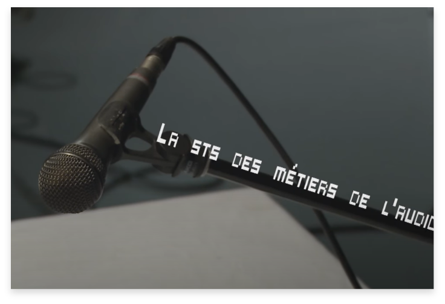
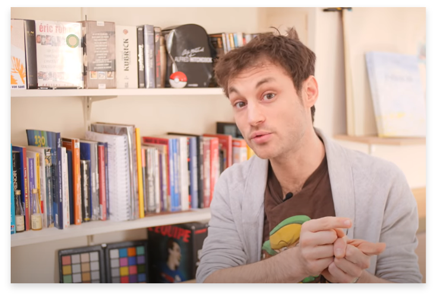

Le montage vidéo de A à Z sur Premiere Pro
#tuto #video #premierepro

Les cinq meilleurs logiciels de montage pour 2021
#montage #video #logiciels
Les quatre meilleurs logiciels de montage vidéo en 2021 (PC/Mac)
#tuto #logiciels #montagevideo

The art of sound design
#art #sound #design
Pro Tools: Shortcuts & Fonctions de base
#tools #shortcuts #protools
Le tableau de bord de Pro Tools
#tableau #protools #son
TOP 20 des meilleurs effets sur AFTER EFFECTS
#top #aftereffects #montage
Sabre Laser sur After Effects (Star Wars Lightsaber)
#tutopremiere #starwars #sabrelaser
POST PRODUCTION
La prise de son en video
#tuto #video #son
Comment faire la meilleure prise de son au monde
#tuto #conseils #son

Les bases de la prise de son stereophonique - Couples Stereo AB ORTF MS
#micro #stereophonique #son
Bien prendre le Son - RVB
#son #RVB #conseils
Cinq erreurs à éviter lors de la prise de son
#enregistrement #mix #moustering
La prise de son DSLR et camera
#dslr #son #camera
Comment avoir un bon éclairage dans nos vidéos
#tuto #conseils #eclairage
Comment choisir sa camera pour la video ?
#tuto #conseils #script
PRODUCTION
5 erreurs fréquentes chez un scénariste débutant
#scenario #debutant #faireducinema

Ecrire un scénario : L'indespensable avant vous lancer (1/4)
#scenario #motivationcinema #faireducinema
[6 CONSEILS] Comment écrire un script de court-métrage/film/pièce de théatre ?
#tuto #conseils #script
Quel logiciel pour écrire son scénario ?

#logiciel #scenario
Ecriture de scénario: cinq questions à se poser
#ecriture #scenario
Huit étapes pour écrire un scénario
#ecriture #scenario
Comment écrire un scénario avec CELTX
#scenario #logiciel #celtx
PRE PRODUCTION
TUTORIELS